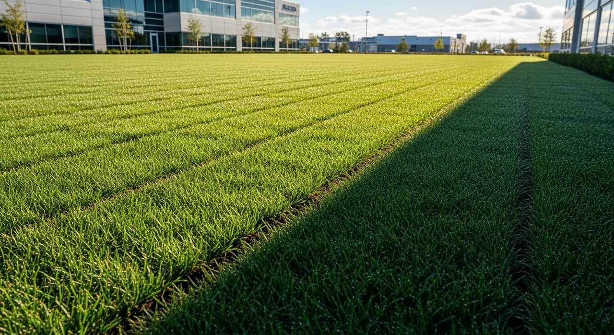

Walk the property
Review the need, access, water movement and intended land use together.
Coordinate soil, grade and establishment for large sites.

Confirm the proposed work, site conditions and delivery responsibilities with P1.
Confirm the proposed work, site conditions and delivery responsibilities with P1.
Confirm the proposed work, site conditions and delivery responsibilities with P1.
Bring the available property information and discuss it during qualification.
Bring the available property information and discuss it during qualification.
Bring the available property information and discuss it during qualification.
Review the need, access, water movement and intended land use together.
Identify the work, order, responsibilities and any specialist approvals.
Confirm scheduling, equipment access and communication before starting.
Discuss completion against the agreed scope and any ongoing care.
Attach verified P1 project photography and scope here when approved. Until then, this page explains capability without claiming a completed job.
View project-profile structure →The current site focuses on working properties of an acre or more. Confirm eligibility, exact service coverage and the work needed.
An address or city, the issue, intended land use, available plans and useful timing. Do not share sensitive site details.
Engineering, approvals and specialist involvement depend on the work. Responsibilities belong in the agreed scope.
Tell us where it is and what needs attention.